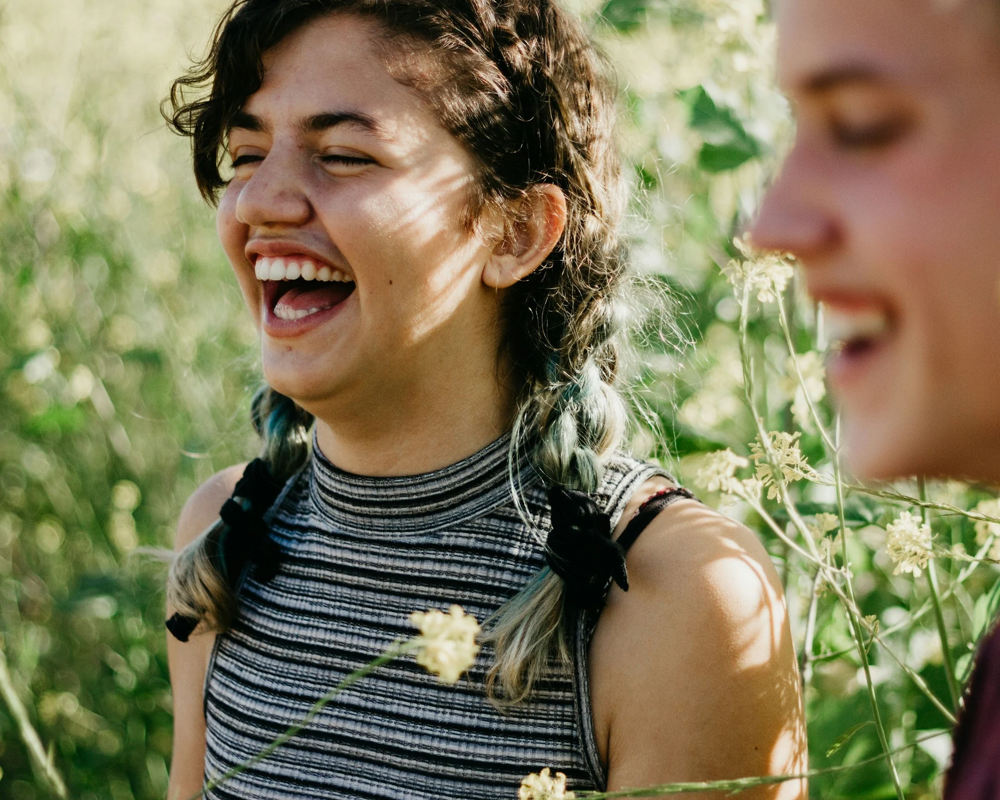
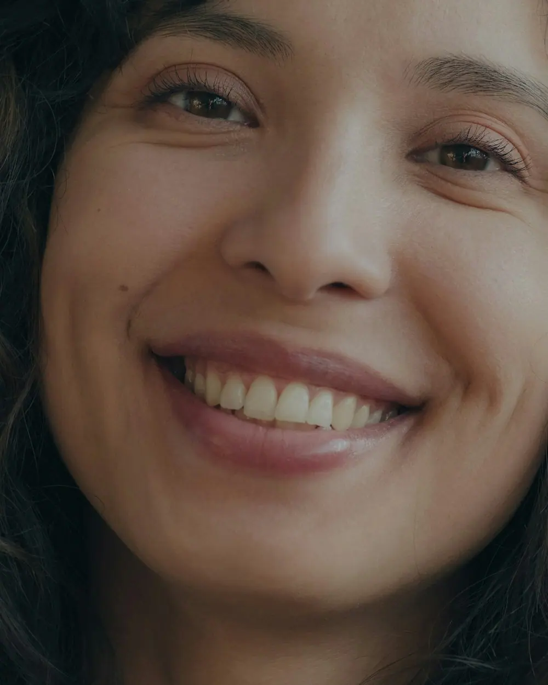
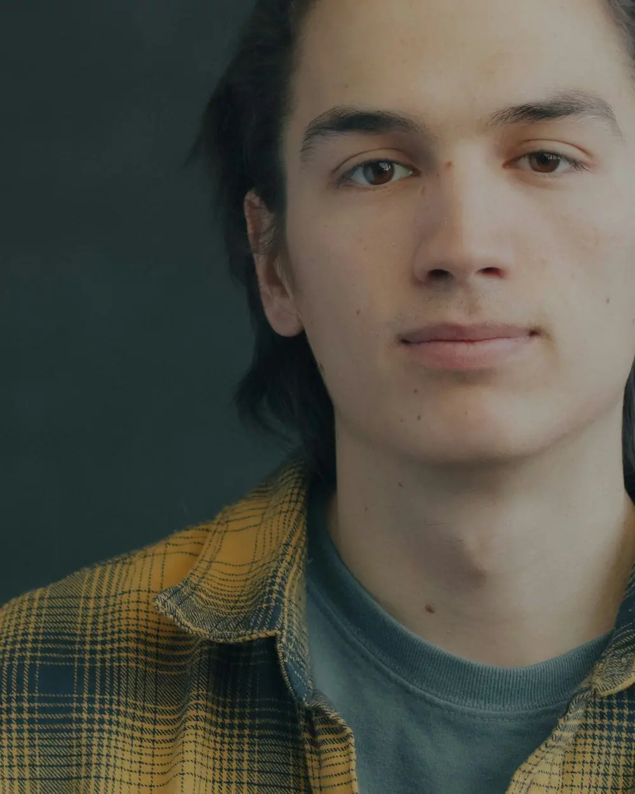
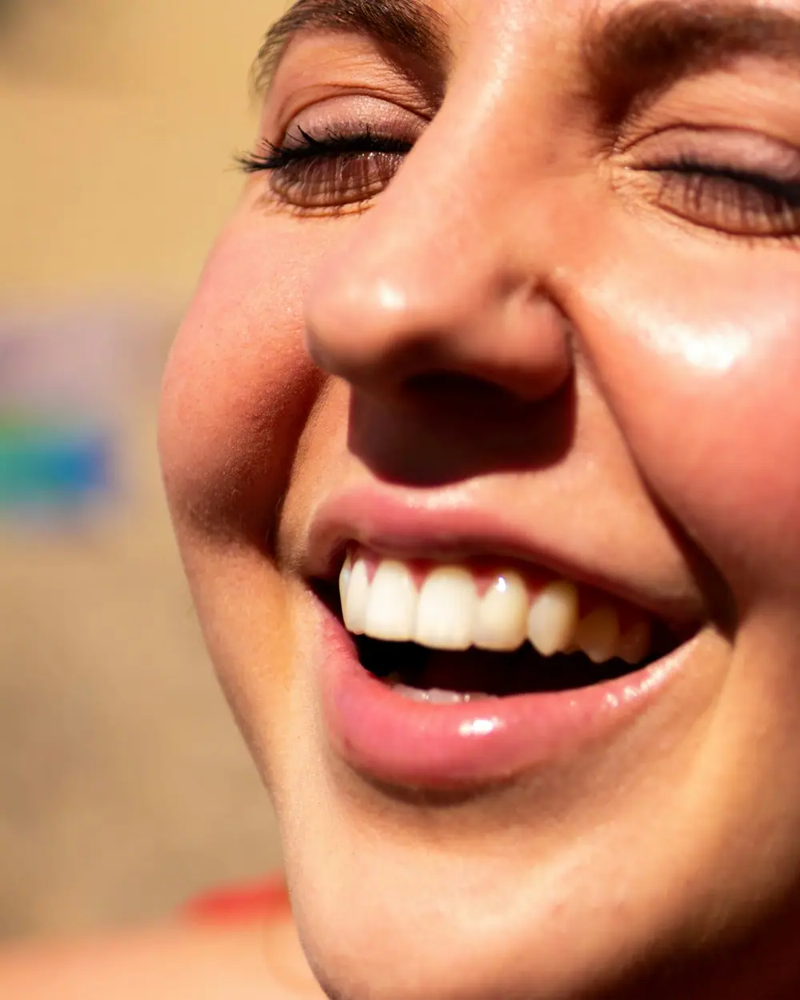
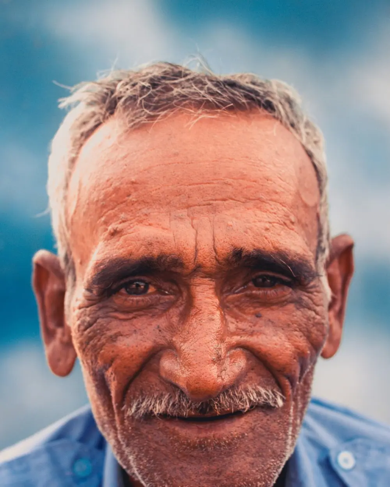
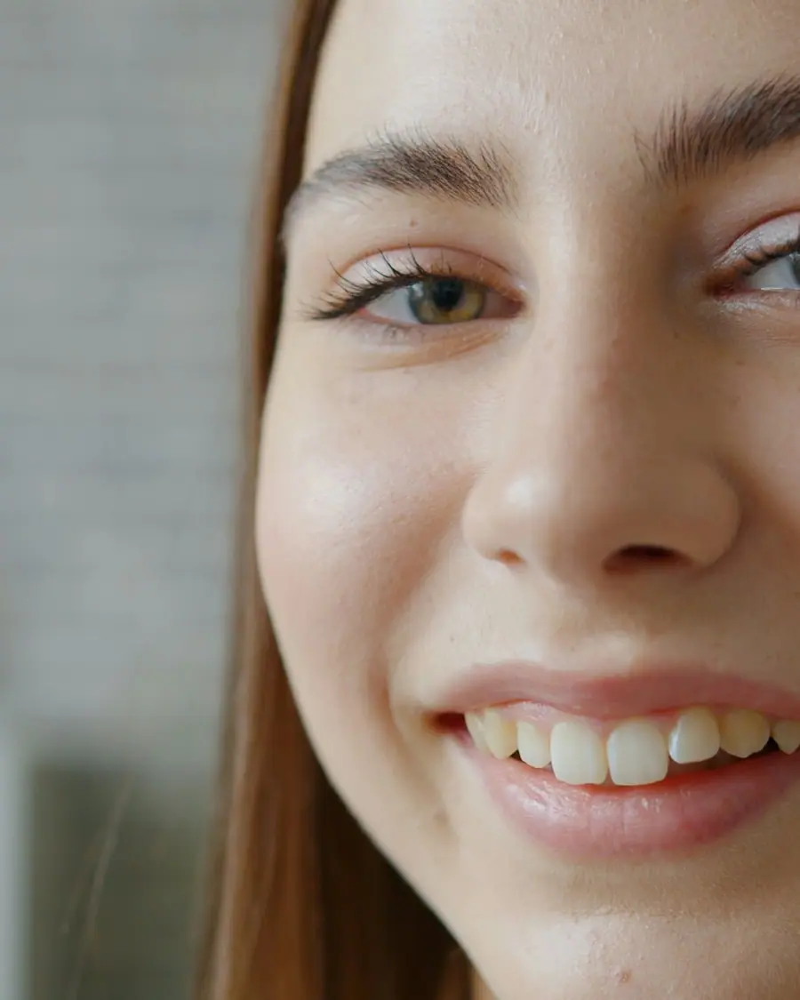
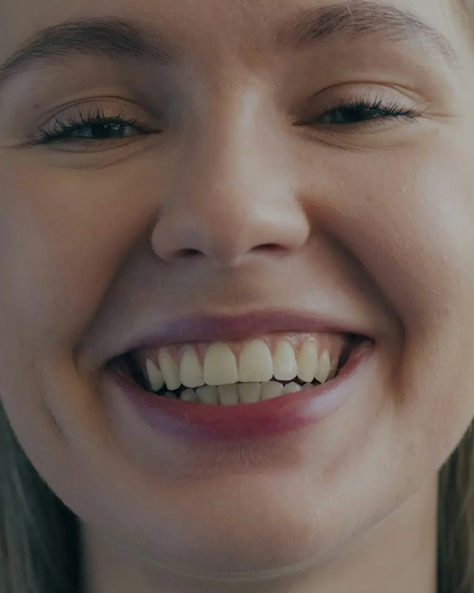

IRRIHortz-klinikaTolosa
Hortz klinika Tolosako zentroan
Kale Nagusiko berrikuspenak, garbiketak, enpasteak, inplanteak eta ortodontzia ikusezina. Hitzordua WhatsApp bidez eskatzen da, deitu gabe.
Esaiguzu zer gertatzen zaizun eta, etorri aurretik, esango dizugu zenbat irauten duen bisitak eta zer ekarri behar duzun.
Orientagarria da. Kontsultan zurekin begiratzen dugu eta hasi aurretik aurrekontua idatziz ematen dizugu.
Zer duzu?
Ukitu zurea: ikusiko duzu zenbat irauten duen lehen bisitak, zer ekarri eta mezua hitzordua eskatzeko jada idatzita.
-
Mina
- Iraupena
- 30 minutu inguru.
- Ekarri
- Hartzen dituzun botiken zerrenda eta erradiografiak.
Minak lo egiten uzten ez badizu, eskatu larrialdiko hitzordu bat gaurko. Ikusi gaurko larrialdiak
-

Pentzeetako odol-jarioa
- Iraupena
- 45 minutu inguru.
- Ekarri
- Hartzen dituzun botiken zerrenda.
-

Hortza hautsita
- Iraupena
- 30-60 minutu.
- Ekarri
- Hortz zatia, baduzu.
Min handia edo odola dariola badago, eskatu premiazko hitzordua gaurko. Ikusi gaurko larrialdiak
-

Berrikuspena eta garbiketa
- Iraupena
- 40 minutu inguru.
- Ekarri
- Ezer ez. Azken bi urteetako erradiografia baduzu, ekarri.
-

Inplanteak
- Iraupena
- 45 minutu inguru.
- Ekarri
- Dituzun txostenak eta erradiografiak.
Aurrekontua idatziz emango dizugu hasi aurretik.
-
Ortodontzia ikusezina
- Iraupena
- 45 minutu inguru.
- Ekarri
- Ezer ez. Argazkiak eta eskaner bat egiten ditugu ahotik, molderik gabe.
Hitzordua deitu gabe
Aukeratu hiru gauza eta WhatsAppeko mezua idatzita utziko dizugu. Egunarekin eta orduarekin erantzungo dizugu.

Larrialdiak gaur
Min handia baduzu, hortz bat hautsi zaizu edo aurpegia handituta daukazu, deitu eta esango dizugu ea gaur ikus zaitzakegun.
Deitu orain · 943 00 00 00 Edo idatzi WhatsApp bidez
Larria bada (kolpe handia aurpegian, sukarra edo irenstea kostatzen zaizu), deitu 112ra.
